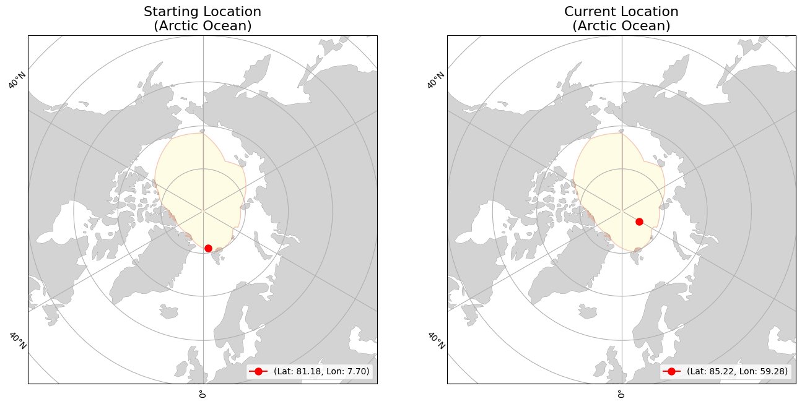

<div><div><b>Buoy Starting and Current Locations</b></div></div>
<div><div><b>Buoy Movement over Time</b></div></div>
<iframe src="300234068514740_movement.html" width="1000" height="1000" style="border:none;"></iframe>
<div>                        <script type="text/javascript">window.PlotlyConfig = {MathJaxConfig: 'local'};</script>
        <script charset="utf-8" src="https://cdn.plot.ly/plotly-2.35.2.min.js"></script>                <div id="e80280c9-feba-4220-9598-cf2bf24a87d2" class="plotly-graph-div" style="height:600px; width:1000px;"></div>            <script type="text/javascript">                                    window.PLOTLYENV=window.PLOTLYENV || {};                                    if (document.getElementById("e80280c9-feba-4220-9598-cf2bf24a87d2")) {                    Plotly.newPlot(                        "e80280c9-feba-4220-9598-cf2bf24a87d2",                        [{"hovertemplate":"Date=%{x}\u003cbr\u003etotal_distance_km=%{y}\u003cextra\u003e\u003c\u002fextra\u003e","legendgroup":"","line":{"color":"#636efa","dash":"solid"},"marker":{"symbol":"circle"},"mode":"lines","name":"","orientation":"v","showlegend":false,"x":["2024-01-01","2024-01-02","2024-01-03","2024-01-04","2024-01-05","2024-01-06","2024-01-07","2024-01-08","2024-01-09","2024-01-10","2024-01-11","2024-01-12","2024-01-13","2024-01-14","2024-01-15","2024-01-16","2024-01-17","2024-01-18","2024-01-19","2024-01-20","2024-01-21","2024-01-22","2024-01-23","2024-01-24","2024-01-25","2024-01-26","2024-01-27","2024-01-28","2024-01-29","2024-01-30","2024-01-31","2024-02-01","2024-02-02","2024-02-03","2024-02-04","2024-02-05","2024-02-06","2024-02-07","2024-02-08","2024-02-09","2024-02-10","2024-02-11","2024-02-12","2024-02-13","2024-02-14","2024-02-15","2024-02-16","2024-02-17","2024-02-18","2024-02-19","2024-02-20","2024-02-21","2024-02-22","2024-02-23","2024-02-24","2024-02-25","2024-02-26","2024-02-27","2024-02-28","2024-02-29","2024-03-01","2024-03-02","2024-03-03","2024-03-04","2024-03-05","2024-03-06","2024-03-07","2024-03-08","2024-03-09","2024-03-10","2024-03-11","2024-03-12","2024-03-13","2024-03-14","2024-03-15","2024-03-16","2024-03-17","2024-03-18","2024-03-19","2024-03-20","2024-03-21","2024-03-22","2024-03-23","2024-03-24","2024-03-25","2024-03-26","2024-03-27","2024-03-28","2024-03-29","2024-03-30","2024-03-31","2024-04-01","2024-04-02","2024-04-03","2024-04-04","2024-04-05","2024-04-06","2024-04-07","2024-04-08","2024-04-09","2024-04-10","2024-04-11","2024-04-12","2024-04-13","2024-04-14","2024-04-15","2024-04-16","2024-04-17","2024-04-18","2024-04-19","2024-04-20","2024-04-21","2024-04-22","2024-04-23","2024-04-24","2024-04-25","2024-04-26","2024-04-27","2024-04-28","2024-04-29","2024-04-30","2024-05-01","2024-05-02","2024-05-03","2024-05-04","2024-05-05","2024-05-06","2024-05-07","2024-05-08","2024-05-09","2024-05-10","2024-05-11","2024-05-12","2024-05-13","2024-05-14","2024-05-15","2024-05-16","2024-05-17","2024-05-18","2024-05-19","2024-05-20","2024-05-21","2024-05-22","2024-05-23","2024-05-24","2024-05-25","2024-05-26","2024-05-27","2024-05-28","2024-05-29","2024-05-30","2024-05-31","2024-06-01","2024-06-02","2024-06-03","2024-06-04","2024-06-05","2024-06-06","2024-06-07","2024-06-08","2024-06-09","2024-06-10","2024-06-11","2024-06-12","2024-06-13","2024-06-14","2024-06-15","2024-06-16","2024-06-17","2024-06-18","2024-06-19","2024-06-20","2024-06-21","2024-06-22","2024-06-23","2024-06-24","2024-06-25","2024-06-26","2024-06-27","2024-06-28","2024-06-29","2024-06-30","2024-07-01","2024-07-02","2024-07-03","2024-07-04","2024-07-05","2024-07-06","2024-07-07","2024-07-08","2024-07-09","2024-07-10","2024-07-11","2024-07-12","2024-07-13","2024-07-14","2024-07-15","2024-07-16","2024-07-17","2024-07-18","2024-07-19","2024-07-20","2024-07-21","2024-07-22","2024-07-23","2024-07-24","2024-07-25","2024-07-26","2024-07-27","2024-07-28","2024-07-29"],"xaxis":"x","y":[8.286042728775259,14.961468717725262,14.650496472324273,11.239331593055253,11.281283749398202,12.76911913157015,6.97713181326807,6.8482645049020645,10.832945308130094,17.76800231933836,17.289251364018913,15.845115782567735,8.67573200086478,0.43934834995512345,8.526427253710313,7.437553742307832,12.331141290940801,8.476310494443455,1.8456011009505833,7.281722370831836,9.09867085442186,3.4761662626673853,4.67376525817042,16.279188883699668,21.224789881561847,31.594181972773956,10.535547652716511,4.852672422959574,20.575305285121917,16.04045131055262,18.55750993505188,19.38631667407024,19.100008815497826,18.465953812689463,13.380771603468373,5.97968086175197,4.188726357952011,4.576474969390091,3.2599849414951696,5.3149305237019115,5.8262945634622785,5.939861625205816,8.584547031811972,3.727721589004237,3.5679464694352525,8.726024909526481,8.276374652504872,10.407385050167388,8.75884154880602,9.047143421543772,13.048478206553686,11.685376457772156,10.305635114143241,5.858792536252296,1.3433081734435661,2.6873335434312353,12.413968981080394,14.926142283483726,10.804231356218917,7.8281536099780435,6.632866642962911,0.31845972989898746,10.625575042073093,1.8108252757350018,2.8492611144584923,1.2096022107579605,4.690030084286149,2.1666552422817937,0.2682865446609544,11.67274852605591,14.783591341376574,6.151352429830274,8.286125402937977,13.179158035347736,14.624536530332374,11.002315235800983,7.930622682037761,10.337977527500916,10.379327073591293,8.734923954823813,8.250008708796864,13.083260858446417,14.311844382623116,16.56064171588309,12.712786649383784,3.876082797378898,4.108935409889898,8.707876285265538,11.908027198935752,12.408046277369444,9.150829881229281,6.066782419525359,3.1613417129161103,5.049778264049992,4.14219186594627,4.1017235814560475,4.31090059820664,5.17774077998214,9.62423554882324,13.293126126120518,12.785397506816754,9.508144025279053,5.187768545415102,5.612194636803235,5.902659029853069,4.9701971472155995,4.4220978541159175,6.4062875596932765,7.518260745535139,4.246800048603404,4.022125689694617,10.81337724957184,8.866512116530624,7.862729009789801,4.69072568835764,5.189724088073088,5.078149876471124,7.655982068201098,6.200207485448479,5.831326992605097,4.498877647766404,4.568763112941341,8.281330266999552,9.291673050010042,5.322312108588978,3.5586928448338737,0.5236429332038404,8.470239620225634,10.596536437351148,4.551300952900778,2.1755361506565922,3.7044035842342833,4.407131264466474,4.216619976703252,4.532637252939941,4.839801731300405,4.350904691234294,5.171677598742838,9.218667568904875,7.687490972481858,11.947198312949576,8.51371982456902,8.787613500706412,9.896640213678218,14.951652043305522,14.180099507429249,11.656029929073098,5.7717622489496305,4.81241240295107,6.123891470217973,1.0664063354852902,3.589305261326145,4.770946693883709,2.3385822565738534,6.762162948216204,10.722260857513112,5.738083630223114,6.815305756249538,9.740666603489181,10.402585473231989,10.646626141453739,14.075592717639797,8.172955103476232,6.351510383364559,5.470580352300862,5.308659455740379,4.687190070755085,12.003701020749714,15.521896847078084,5.900919129068679,4.173638069464803,5.723349318999743,3.2516837806270664,4.6986392203895475,6.385734467734552,7.249195352460804,1.3436832745987473,1.0790535001918078,1.7175886408281884,3.8276423943363853,4.989549233034667,6.046641516170836,12.00581728078698,8.342034127924677,5.721300946269022,5.2240199904834315,6.078108452586332,3.0885368271442597,2.327414647917742,9.029537269269786,2.760194606843635,1.7313248405903443,10.797849647489466,9.249535277827311,4.778523694175673,6.055622136124627,16.90514262153123,18.8476119638068,14.611542135579018,14.977387326533226,13.40102448407065,12.779709272213967,17.531916997364803,12.683256793662407,7.13523180698245,12.737854125724196,6.166154951121289,15.783765186363636,12.913574368165527,4.40101133835093,4.483185684641442],"yaxis":"y","type":"scatter"}],                        {"template":{"data":{"histogram2dcontour":[{"type":"histogram2dcontour","colorbar":{"outlinewidth":0,"ticks":""},"colorscale":[[0.0,"#0d0887"],[0.1111111111111111,"#46039f"],[0.2222222222222222,"#7201a8"],[0.3333333333333333,"#9c179e"],[0.4444444444444444,"#bd3786"],[0.5555555555555556,"#d8576b"],[0.6666666666666666,"#ed7953"],[0.7777777777777778,"#fb9f3a"],[0.8888888888888888,"#fdca26"],[1.0,"#f0f921"]]}],"choropleth":[{"type":"choropleth","colorbar":{"outlinewidth":0,"ticks":""}}],"histogram2d":[{"type":"histogram2d","colorbar":{"outlinewidth":0,"ticks":""},"colorscale":[[0.0,"#0d0887"],[0.1111111111111111,"#46039f"],[0.2222222222222222,"#7201a8"],[0.3333333333333333,"#9c179e"],[0.4444444444444444,"#bd3786"],[0.5555555555555556,"#d8576b"],[0.6666666666666666,"#ed7953"],[0.7777777777777778,"#fb9f3a"],[0.8888888888888888,"#fdca26"],[1.0,"#f0f921"]]}],"heatmap":[{"type":"heatmap","colorbar":{"outlinewidth":0,"ticks":""},"colorscale":[[0.0,"#0d0887"],[0.1111111111111111,"#46039f"],[0.2222222222222222,"#7201a8"],[0.3333333333333333,"#9c179e"],[0.4444444444444444,"#bd3786"],[0.5555555555555556,"#d8576b"],[0.6666666666666666,"#ed7953"],[0.7777777777777778,"#fb9f3a"],[0.8888888888888888,"#fdca26"],[1.0,"#f0f921"]]}],"heatmapgl":[{"type":"heatmapgl","colorbar":{"outlinewidth":0,"ticks":""},"colorscale":[[0.0,"#0d0887"],[0.1111111111111111,"#46039f"],[0.2222222222222222,"#7201a8"],[0.3333333333333333,"#9c179e"],[0.4444444444444444,"#bd3786"],[0.5555555555555556,"#d8576b"],[0.6666666666666666,"#ed7953"],[0.7777777777777778,"#fb9f3a"],[0.8888888888888888,"#fdca26"],[1.0,"#f0f921"]]}],"contourcarpet":[{"type":"contourcarpet","colorbar":{"outlinewidth":0,"ticks":""}}],"contour":[{"type":"contour","colorbar":{"outlinewidth":0,"ticks":""},"colorscale":[[0.0,"#0d0887"],[0.1111111111111111,"#46039f"],[0.2222222222222222,"#7201a8"],[0.3333333333333333,"#9c179e"],[0.4444444444444444,"#bd3786"],[0.5555555555555556,"#d8576b"],[0.6666666666666666,"#ed7953"],[0.7777777777777778,"#fb9f3a"],[0.8888888888888888,"#fdca26"],[1.0,"#f0f921"]]}],"surface":[{"type":"surface","colorbar":{"outlinewidth":0,"ticks":""},"colorscale":[[0.0,"#0d0887"],[0.1111111111111111,"#46039f"],[0.2222222222222222,"#7201a8"],[0.3333333333333333,"#9c179e"],[0.4444444444444444,"#bd3786"],[0.5555555555555556,"#d8576b"],[0.6666666666666666,"#ed7953"],[0.7777777777777778,"#fb9f3a"],[0.8888888888888888,"#fdca26"],[1.0,"#f0f921"]]}],"mesh3d":[{"type":"mesh3d","colorbar":{"outlinewidth":0,"ticks":""}}],"scatter":[{"fillpattern":{"fillmode":"overlay","size":10,"solidity":0.2},"type":"scatter"}],"parcoords":[{"type":"parcoords","line":{"colorbar":{"outlinewidth":0,"ticks":""}}}],"scatterpolargl":[{"type":"scatterpolargl","marker":{"colorbar":{"outlinewidth":0,"ticks":""}}}],"bar":[{"error_x":{"color":"#2a3f5f"},"error_y":{"color":"#2a3f5f"},"marker":{"line":{"color":"#E5ECF6","width":0.5},"pattern":{"fillmode":"overlay","size":10,"solidity":0.2}},"type":"bar"}],"scattergeo":[{"type":"scattergeo","marker":{"colorbar":{"outlinewidth":0,"ticks":""}}}],"scatterpolar":[{"type":"scatterpolar","marker":{"colorbar":{"outlinewidth":0,"ticks":""}}}],"histogram":[{"marker":{"pattern":{"fillmode":"overlay","size":10,"solidity":0.2}},"type":"histogram"}],"scattergl":[{"type":"scattergl","marker":{"colorbar":{"outlinewidth":0,"ticks":""}}}],"scatter3d":[{"type":"scatter3d","line":{"colorbar":{"outlinewidth":0,"ticks":""}},"marker":{"colorbar":{"outlinewidth":0,"ticks":""}}}],"scattermapbox":[{"type":"scattermapbox","marker":{"colorbar":{"outlinewidth":0,"ticks":""}}}],"scatterternary":[{"type":"scatterternary","marker":{"colorbar":{"outlinewidth":0,"ticks":""}}}],"scattercarpet":[{"type":"scattercarpet","marker":{"colorbar":{"outlinewidth":0,"ticks":""}}}],"carpet":[{"aaxis":{"endlinecolor":"#2a3f5f","gridcolor":"white","linecolor":"white","minorgridcolor":"white","startlinecolor":"#2a3f5f"},"baxis":{"endlinecolor":"#2a3f5f","gridcolor":"white","linecolor":"white","minorgridcolor":"white","startlinecolor":"#2a3f5f"},"type":"carpet"}],"table":[{"cells":{"fill":{"color":"#EBF0F8"},"line":{"color":"white"}},"header":{"fill":{"color":"#C8D4E3"},"line":{"color":"white"}},"type":"table"}],"barpolar":[{"marker":{"line":{"color":"#E5ECF6","width":0.5},"pattern":{"fillmode":"overlay","size":10,"solidity":0.2}},"type":"barpolar"}],"pie":[{"automargin":true,"type":"pie"}]},"layout":{"autotypenumbers":"strict","colorway":["#636efa","#EF553B","#00cc96","#ab63fa","#FFA15A","#19d3f3","#FF6692","#B6E880","#FF97FF","#FECB52"],"font":{"color":"#2a3f5f"},"hovermode":"closest","hoverlabel":{"align":"left"},"paper_bgcolor":"white","plot_bgcolor":"#E5ECF6","polar":{"bgcolor":"#E5ECF6","angularaxis":{"gridcolor":"white","linecolor":"white","ticks":""},"radialaxis":{"gridcolor":"white","linecolor":"white","ticks":""}},"ternary":{"bgcolor":"#E5ECF6","aaxis":{"gridcolor":"white","linecolor":"white","ticks":""},"baxis":{"gridcolor":"white","linecolor":"white","ticks":""},"caxis":{"gridcolor":"white","linecolor":"white","ticks":""}},"coloraxis":{"colorbar":{"outlinewidth":0,"ticks":""}},"colorscale":{"sequential":[[0.0,"#0d0887"],[0.1111111111111111,"#46039f"],[0.2222222222222222,"#7201a8"],[0.3333333333333333,"#9c179e"],[0.4444444444444444,"#bd3786"],[0.5555555555555556,"#d8576b"],[0.6666666666666666,"#ed7953"],[0.7777777777777778,"#fb9f3a"],[0.8888888888888888,"#fdca26"],[1.0,"#f0f921"]],"sequentialminus":[[0.0,"#0d0887"],[0.1111111111111111,"#46039f"],[0.2222222222222222,"#7201a8"],[0.3333333333333333,"#9c179e"],[0.4444444444444444,"#bd3786"],[0.5555555555555556,"#d8576b"],[0.6666666666666666,"#ed7953"],[0.7777777777777778,"#fb9f3a"],[0.8888888888888888,"#fdca26"],[1.0,"#f0f921"]],"diverging":[[0,"#8e0152"],[0.1,"#c51b7d"],[0.2,"#de77ae"],[0.3,"#f1b6da"],[0.4,"#fde0ef"],[0.5,"#f7f7f7"],[0.6,"#e6f5d0"],[0.7,"#b8e186"],[0.8,"#7fbc41"],[0.9,"#4d9221"],[1,"#276419"]]},"xaxis":{"gridcolor":"white","linecolor":"white","ticks":"","title":{"standoff":15},"zerolinecolor":"white","automargin":true,"zerolinewidth":2},"yaxis":{"gridcolor":"white","linecolor":"white","ticks":"","title":{"standoff":15},"zerolinecolor":"white","automargin":true,"zerolinewidth":2},"scene":{"xaxis":{"backgroundcolor":"#E5ECF6","gridcolor":"white","linecolor":"white","showbackground":true,"ticks":"","zerolinecolor":"white","gridwidth":2},"yaxis":{"backgroundcolor":"#E5ECF6","gridcolor":"white","linecolor":"white","showbackground":true,"ticks":"","zerolinecolor":"white","gridwidth":2},"zaxis":{"backgroundcolor":"#E5ECF6","gridcolor":"white","linecolor":"white","showbackground":true,"ticks":"","zerolinecolor":"white","gridwidth":2}},"shapedefaults":{"line":{"color":"#2a3f5f"}},"annotationdefaults":{"arrowcolor":"#2a3f5f","arrowhead":0,"arrowwidth":1},"geo":{"bgcolor":"white","landcolor":"#E5ECF6","subunitcolor":"white","showland":true,"showlakes":true,"lakecolor":"white"},"title":{"x":0.05},"mapbox":{"style":"light"}}},"xaxis":{"anchor":"y","domain":[0.0,1.0],"title":{"text":"Date"},"tickangle":45},"yaxis":{"anchor":"x","domain":[0.0,1.0],"title":{"text":"total_distance_km"}},"legend":{"tracegroupgap":0},"margin":{"t":60},"title":{"text":"Total Distance Traveled over Time","font":{"size":16},"x":0.5},"height":600,"width":1000},                        {"responsive": true}                    )                };                            </script>        </div>